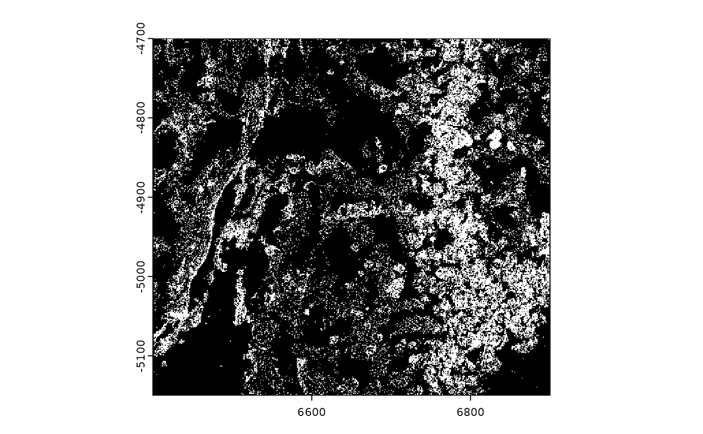
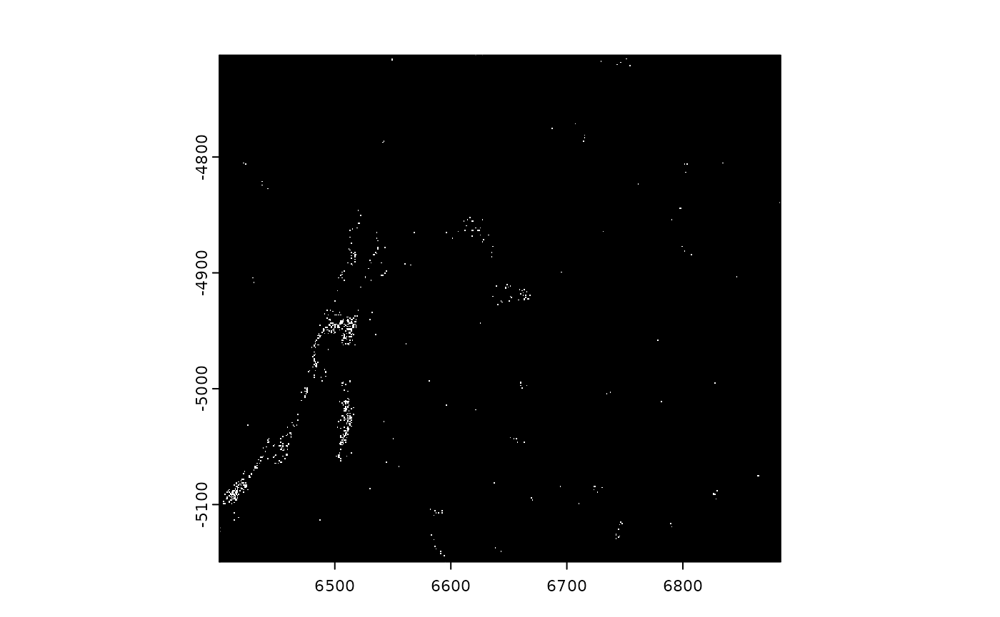

Giotto spatial geometry classes
spatial_geometries.Rmd1. Overview
GiottoClass represents spatial polygons and points
respectively as S4 classes giottoPolygon and
giottoPoints. These objects are built on top of
terra SpatVectors in order to represent spatial
biology. They also respond to many of terra’s generics, with some
enhancements. Both objects have a spatVector slot that
contains the main information. This common slot is inherited from the
VIRTUAL terraVectData class, however this
naming may be subject to change as other data representations are
added.
The structures of these classes are:
terraVectData
\- spatVector
giottoPolygon
\- spatVector (spatial polygons SpatVector)
\- spatVectorCentroids (centroids points SpatVector)
\- overlaps (list of overlapped features info)
\- name (object name/spat_unit)
\- unique_ID_cache (cache of polygon IDs)
giottoPoints
\- spatVector (spatial points SpatVector)
\- networks (feature network)
\- feat_type (object name/feat_type)
\- unique_ID_cache (cache of feature IDs)Of note are the unique_ID_cache slots which are used to
get around the memory usage incurred when frequently accessing the
SpatVectors attributes. The caches should be updated after
modifications to the object. This is automatically performed when using
[] subsetting.
2.1 Polygon object creation
createGiottoPolygon() accepts a number of inputs,
including filepaths to spatial files such as .wkt, .shp, or .GeoJSON or
mask image files of common formats such as .tif or .png. After reading
in these files, they are passed to the respective methods for
SpatVector and SpatRaster (mask image).
data.frame-like inputs are also allowed as long as they
are formatted similarly to terra’s matrix
representation of polygon geometries, with at least the following
columns.
-
geom: integer identifier for each polygon -
part: integer identifier for each part of the polygon, in the case of a multi polygon -
x: numeric x coordinate of a polygon vertex -
y: numeric y coordinate of a polygon vertex -
hole: integer identifier for each hole within a polygon -
poly_ID: standard Giotto identifier for the polygon. Akin to cell_ID
Additional columns can be included as other attributes, but a set of
poly_IDs are required.
For de-novo generation of simple polygon arrays, see the
documentation for polyStamp() and
tessellate()
2.2 Points object creation
There are relatively fewer input methods for
giottoPoints since they currently tend to be provided as
flat files as opposed to spatial-specific formats.
createGiottoPoints() works with with
data.frame-like inputs with at least columns for
x-coordinate, y-coordinate, and ID information. The first two detected
numeric columns are expected to be x and y respectively. The first
character column is assumed to be the feat_IDs. terra
SpatVector inputs are also accepted.
A helpful parameter is split_keyword which accepts a
list of regex keywords to pull matched features into separate
giottoPoints objects. This is useful in situations where
multiple feature modalities and/or QC targets are provided together and
would interfere with each other if analyzed together. (see examples in
createGiottoPoints() documentation)
3. Subsetting
giottoPoints and giottoPolygons can be
subset either by logical vectors or by ID.
library(GiottoClass)
gpoly <- GiottoData::loadSubObjectMini("giottoPolygon")
gpoints <- GiottoData::loadSubObjectMini("giottoPoints")
# full objects
print(gpoly)## An object of class giottoPolygon
## spat_unit : "aggregate"
## Spatial Information:
## class : SpatVector
## geometry : polygons
## dimensions : 462, 4 (geometries, attributes)
## extent : 6391.466, 6903.573, -5153.897, -4694.868 (xmin, xmax, ymin, ymax)
## coord. ref. :
## names : poly_ID stack agg_n valid
## type : <chr> <chr> <int> <int>
## values : 100210519278873141813371~ NA 2 1
## 101161259912191124732236~ NA 2 1
## 101488859781016188084173~ NA 2 1
## centroids : calculated
## overlaps : calculated
print(gpoints)## An object of class giottoPoints
## feat_type : "rna"
## Feature Information:
## class : SpatVector
## geometry : points
## dimensions : 79761, 3 (geometries, attributes)
## extent : 6400.037, 6900.032, -5149.983, -4699.979 (xmin, xmax, ymin, ymax)
## coord. ref. :
## names : feat_ID global_z feat_ID_uniq
## type : <chr> <int> <int>
## values : Mlc1 0 1
## Gprc5b 0 2
## Gfap 0 3
# subsets
plot(gpoly)
plot(gpoly[c("100210519278873141813371229408401071444", "101161259912191124732236989250178928032", "101488859781016188084173008420811094152")])
print(gpoly[c("100210519278873141813371229408401071444", "101161259912191124732236989250178928032", "101488859781016188084173008420811094152")])## An object of class giottoPolygon
## spat_unit : "aggregate"
## Spatial Information:
## class : SpatVector
## geometry : polygons
## dimensions : 3, 4 (geometries, attributes)
## extent : 6463.427, 6806.944, -5146.466, -4876.088 (xmin, xmax, ymin, ymax)
## coord. ref. :
## names : poly_ID stack agg_n valid
## type : <chr> <chr> <int> <int>
## values : 100210519278873141813371~ NA 2 1
## 101161259912191124732236~ NA 2 1
## 101488859781016188084173~ NA 2 1
## centroids : calculated
## overlaps : calculated
plot(gpoints)

## An object of class giottoPoints
## feat_type : "rna"
## Feature Information:
## class : SpatVector
## geometry : points
## dimensions : 814, 3 (geometries, attributes)
## extent : 6400.663, 6884.093, -5149.767, -4711.758 (xmin, xmax, ymin, ymax)
## coord. ref. :
## names : feat_ID global_z feat_ID_uniq
## type : <chr> <int> <int>
## values : Fn1 0 166
## Fn1 0 181
## Fn1 0 195$ extraction can be used to pull attributes of these
objects as vectors
head(gpoly$poly_ID)## [1] "100210519278873141813371229408401071444"
## [2] "101161259912191124732236989250178928032"
## [3] "101488859781016188084173008420811094152"
## [4] "101523780333017320796881555775415156847"
## [5] "102184699197574201819246996094734116255"
## [6] "102893953956695364131894293580364005295"4. Conversion to data.table
GiottoClass has a set of functions for converting
giottoPoints and giottoPolygon objects between
spatial classes using as.sf(), as.sp(),
as.stars(), and as.terra().
terra-based giottoPoints and
giottoPolygon objects can also be converted into
data.table for geometry manipulation. This method largely
piggybacks off terra’s as.data.frame() and adds
support for geom = "XY" for polygon geometry.
gpoly_dt <- data.table::as.data.table(gpoly, geom = "XY")
gpoints_dt <- data.table::as.data.table(gpoints, geom = "XY")
print(gpoly_dt)## geom part x y hole
## 1: 1 1 6642.257 -5136.674 0
## 2: 1 1 6642.711 -5137.020 0
## 3: 1 1 6643.050 -5137.462 0
## 4: 1 1 6643.310 -5137.956 0
## 5: 1 1 6643.484 -5138.518 0
## ---
## 35971: 462 1 6788.764 -4942.998 0
## 35972: 462 1 6788.905 -4942.999 0
## 35973: 462 1 6789.575 -4942.999 0
## 35974: 462 1 6789.576 -4943.000 0
## 35975: 462 1 6789.695 -4943.000 0
## poly_ID stack agg_n valid
## 1: 100210519278873141813371229408401071444 <NA> 2 1
## 2: 100210519278873141813371229408401071444 <NA> 2 1
## 3: 100210519278873141813371229408401071444 <NA> 2 1
## 4: 100210519278873141813371229408401071444 <NA> 2 1
## 5: 100210519278873141813371229408401071444 <NA> 2 1
## ---
## 35971: 98561957902191275233320065611022298397 <NA> 2 1
## 35972: 98561957902191275233320065611022298397 <NA> 2 1
## 35973: 98561957902191275233320065611022298397 <NA> 2 1
## 35974: 98561957902191275233320065611022298397 <NA> 2 1
## 35975: 98561957902191275233320065611022298397 <NA> 2 1
print(gpoints_dt)## feat_ID global_z feat_ID_uniq x y
## 1: Mlc1 0 1 6400.037 -4966.651
## 2: Gprc5b 0 2 6400.041 -4965.377
## 3: Gfap 0 3 6400.078 -5081.453
## 4: Gfap 0 4 6400.084 -5038.288
## 5: Ednrb 0 5 6400.172 -4816.516
## ---
## 79757: Adgra1 1 80339 6900.010 -4773.595
## 79758: Cspg5 1 80340 6900.023 -4772.980
## 79759: Adcyap1r1 1 80341 6900.024 -5007.432
## 79760: Slc17a7 1 80342 6900.026 -4924.840
## 79761: Cldn5 1 80343 6900.030 -4746.916These tables can then be either re-ingested using
createGiottoPolygon() and createGiottoPoints()
or converted to SpatVector using as.polygons()
or as.points()
print(as.polygons(gpoly_dt))## class : SpatVector
## geometry : polygons
## dimensions : 462, 4 (geometries, attributes)
## extent : 6391.466, 6903.573, -5153.897, -4694.868 (xmin, xmax, ymin, ymax)
## coord. ref. :
## names : poly_ID stack agg_n valid
## type : <chr> <chr> <int> <int>
## values : 100210519278873141813371~ NA 2 1
## 101161259912191124732236~ NA 2 1
## 101488859781016188084173~ NA 2 1
# gpoints currently still requires addition of geom, part, and hole cols
gpoints_dt[, geom := 1:.N]
gpoints_dt[, part := 1]
gpoints_dt[, hole := 0]
print(as.points(gpoints_dt))## class : SpatVector
## geometry : points
## dimensions : 79761, 3 (geometries, attributes)
## extent : 6400.037, 6900.032, -5149.983, -4699.979 (xmin, xmax, ymin, ymax)
## coord. ref. :
## names : feat_ID global_z feat_ID_uniq
## type : <chr> <int> <int>
## values : Mlc1 0 1
## Gprc5b 0 2
## Gfap 0 35. Centroids
Centroids information are carried by giottoPolygon
objects in the spatVectorCentroids slot. The
centroids() generic from terra pulls from this
slot if the information already exists. Otherwise, it calculates and
returns a set of centroids for the polygons as SpatVector
points. The append_gpolygon param makes it so that the
giottoPolygon with the centroids info appended is returned
instead.
6.1 Overlaps
Overlaps are sets of features overlapped by the polygons.
calculateOverlaps() is a generic function that performs
this overlapping between polygons and points and polygons and raster
(intensity) data.
gpoly@overlaps <- NULL # reset overlaps info
gpoly <- calculateOverlap(gpoly, gpoints, verbose = FALSE)
gimg <- GiottoData::loadSubObjectMini("giottoLargeImage")
gpoly <- calculateOverlap(gpoly, gimg, verbose = FALSE, progress = FALSE)Overlaps are stored as a list under the
giottoPolygon overlaps slot, separated by
modalities. This list can be retrieved using overlaps(). In
the case of overlapped points geometries, the list items are points
SpatVector objects. The poly_ID column tracks
which polygon is overlapping the point feature as designated by
feat_ID and feat_ID_uniq. NA
values mean that the feature was not overlapped.
For overlaps intensities, the results are stored as
data.tables in a nested list called
intensity under the main overlaps
list.
print(gpoly@overlaps$rna)## class : SpatVector
## geometry : points
## dimensions : 79761, 3 (geometries, attributes)
## extent : 6400.037, 6900.032, -5149.983, -4699.979 (xmin, xmax, ymin, ymax)
## coord. ref. :
## names : poly_ID feat_ID feat_ID_uniq
## type : <chr> <chr> <int>
## values : NA Mlc1 1
## NA Gprc5b 2
## NA Gfap 3
print(gpoly@overlaps$intensity)## $dapi_z0
## poly_ID mini_dataset_dapi_z0
## 1: 100210519278873141813371229408401071444 18
## 2: 100210519278873141813371229408401071444 18
## 3: 100210519278873141813371229408401071444 18
## 4: 100210519278873141813371229408401071444 18
## 5: 100210519278873141813371229408401071444 18
## ---
## 3170620: 98561957902191275233320065611022298397 98
## 3170621: 98561957902191275233320065611022298397 98
## 3170622: 98561957902191275233320065611022298397 88
## 3170623: 98561957902191275233320065611022298397 88
## 3170624: 98561957902191275233320065611022298397 886.2 Overlaps to matrix
Overlap results can be converted into expression matrices using
overlapToMatrix()
# points, rna modality (default)
rna_mat <- overlapToMatrix(gpoly)## Warning: [overlapToMatrix] expected col_names and row_names not provided together.
## Points aggregation Matrix output may be missing some cols and rows where no
## detections were found.
print(rna_mat[1:3,1:3])## 3 x 3 sparse Matrix of class "dgCMatrix"
## 100210519278873141813371229408401071444
## Abcc9 .
## Ackr1 .
## Ackr3 .
## 101161259912191124732236989250178928032
## Abcc9 .
## Ackr1 .
## Ackr3 .
## 101488859781016188084173008420811094152
## Abcc9 .
## Ackr1 .
## Ackr3 2
# intensity, dapi_z0
intens_mat <- overlapToMatrix(gpoly, type = "intensity", feat_info = "dapi_z0")
print(intens_mat[1, 1:3, drop = FALSE])## 1 x 3 Matrix of class "dgeMatrix"
## 100210519278873141813371229408401071444
## mini_dataset_dapi_z0 519184
## 101161259912191124732236989250178928032
## mini_dataset_dapi_z0 583988
## 101488859781016188084173008420811094152
## mini_dataset_dapi_z0 613670## R version 4.3.2 (2023-10-31)
## Platform: x86_64-pc-linux-gnu (64-bit)
## Running under: Ubuntu 22.04.3 LTS
##
## Matrix products: default
## BLAS: /usr/lib/x86_64-linux-gnu/openblas-pthread/libblas.so.3
## LAPACK: /usr/lib/x86_64-linux-gnu/openblas-pthread/libopenblasp-r0.3.20.so; LAPACK version 3.10.0
##
## locale:
## [1] LC_CTYPE=C.UTF-8 LC_NUMERIC=C LC_TIME=C.UTF-8
## [4] LC_COLLATE=C.UTF-8 LC_MONETARY=C.UTF-8 LC_MESSAGES=C.UTF-8
## [7] LC_PAPER=C.UTF-8 LC_NAME=C LC_ADDRESS=C
## [10] LC_TELEPHONE=C LC_MEASUREMENT=C.UTF-8 LC_IDENTIFICATION=C
##
## time zone: UTC
## tzcode source: system (glibc)
##
## attached base packages:
## [1] stats graphics grDevices utils datasets methods base
##
## other attached packages:
## [1] GiottoClass_0.1.2
##
## loaded via a namespace (and not attached):
## [1] sass_0.4.8 utf8_1.2.4 class_7.3-22
## [4] KernSmooth_2.23-22 stringi_1.8.3 lattice_0.21-9
## [7] digest_0.6.33 magrittr_2.0.3 evaluate_0.23
## [10] grid_4.3.2 fastmap_1.1.1 jsonlite_1.8.8
## [13] Matrix_1.6-4 e1071_1.7-14 backports_1.4.1
## [16] DBI_1.2.0 scattermore_1.2 GiottoData_0.2.6.2
## [19] purrr_1.0.2 fansi_1.0.6 scales_1.3.0
## [22] codetools_0.2-19 textshaping_0.3.7 jquerylib_0.1.4
## [25] cli_3.6.2 rlang_1.1.2 units_0.8-5
## [28] munsell_0.5.0 cachem_1.0.8 yaml_2.3.8
## [31] tools_4.3.2 raster_3.6-26 memoise_2.0.1
## [34] GiottoUtils_0.1.2 checkmate_2.3.1 colorspace_2.1-0
## [37] ggplot2_3.4.4 exactextractr_0.10.0 vctrs_0.6.5
## [40] R6_2.5.1 proxy_0.4-27 classInt_0.4-10
## [43] lifecycle_1.0.4 stringr_1.5.1 fs_1.6.3
## [46] ragg_1.2.7 pkgconfig_2.0.3 desc_1.4.3
## [49] pkgdown_2.0.7 terra_1.7-65 bslib_0.6.1
## [52] pillar_1.9.0 gtable_0.3.4 data.table_1.14.10
## [55] glue_1.6.2 Rcpp_1.0.11 sf_1.0-15
## [58] systemfonts_1.0.5 xfun_0.41 tibble_3.2.1
## [61] highr_0.10 knitr_1.45 htmltools_0.5.7
## [64] rmarkdown_2.25 compiler_4.3.2 sp_2.1-2